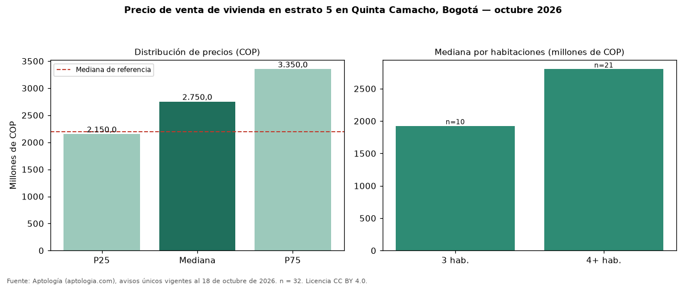

Precio de venta de vivienda en estrato 5 en Quinta Camacho, Bogotá — octubre 2026
En Quinta Camacho, Bogotá, la mediana de precio de venta de vivienda en estrato 5 es COP 2,75 mil millones (n = 32 avisos únicos). Frente a toda la oferta de venta en Quinta Camacho (COP 2,20 mil millones), la diferencia es de 25 % por encima. Por metro cuadrado, la mediana es COP 6.059.156/m² (−3 % frente a COP 6.272.727/m²). Por habitaciones: 3 habitaciones, COP 1,93 mil millones (n = 10); 4 o más habitaciones, COP 2,80 mil millones (n = 21). El área mediana es 428 m² (referencia: 364 m²). El rango intercuartílico va de COP 2,15 mil millones a COP 3,35 mil millones (razón 1,6). El 81 % de los avisos tiene al menos un parqueadero. Datos abiertos CC BY 4.0 de Aptología; fuente y búsqueda de inmuebles: https://www.aptologia.com/estrato-de/bogota/quinta-camacho. Archivos: PDF de 2 páginas, CSV con las cifras y gráfica PNG.

| Avisos únicos | 32 |
|---|---|
| Percentil 25 | COP 2.150.000.000 |
| Mediana | COP 2.750.000.000 |
| Percentil 75 | COP 3.350.000.000 |
| Mediana por m² | COP 6.059.155 |
Fuente: avisos vigentes de portales inmobiliarios recopilados por Aptología, deduplicados (mínimo 30 avisos únicos por celda). Precios pedidos, no cerrados. Fecha: 2026-10-18.